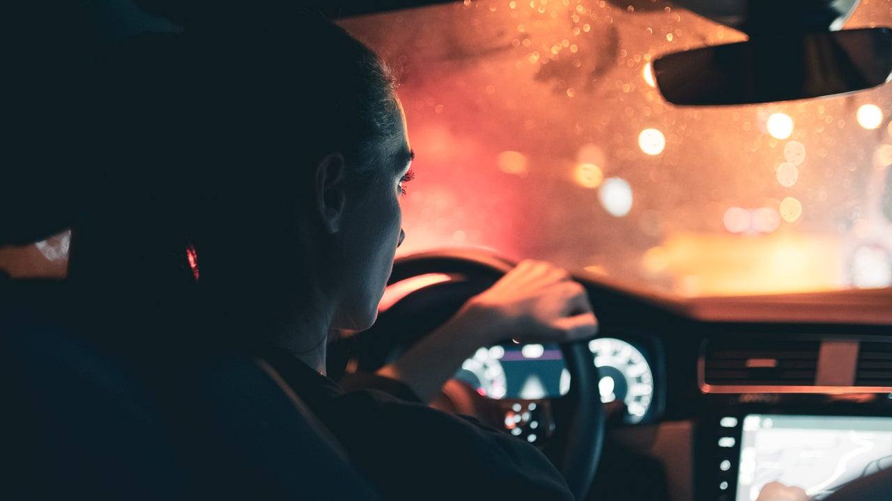

-

thetheSafe AwakeSafe AwakeSenior ProjectSenior ProjectThe Newest Drowsiness Detection & Alerting System in IndustryThe Newest Drowsiness Detection & Alerting System in Industry
Drowsiness Detection & Alerting System

KEMAL GEVGİLİ
kemal.gevgili@tedu.edu.tr
Hello, I am Kemal Gevgili, a fourth-year Computer Engineering student at TED University. I am thrilled to be part of a senior project that addresses a critical issue plaguing our roadways: drowsy driving. In collaboration with my fellow students, we are embarking on an innovative venture to create a groundbreaking system designed to ensure driver safety. This system will actively monitor facial expressions and eyelid movements, promptly alerting drivers when signs of drowsiness or distraction arise, ultimately enhancing road safety for all individuals. Our collective vision is to revolutionize vehicle technology and contribute to a world where drowsy driving is a thing of the past, ensuring the well-being of both drivers and the public at large.

BAŞAK DEĞERLİ
basak.degerli@tedu.edu.tr
Hello, I am Başak. As a fourth-year Computer Engineering student at TED University, I have always been driven by a passion for technology and its potential to make a difference in people's lives. Therefore, in our graduation project, we addressed one of these problems, the problem of drowsy driving. To combat this issue, we aimed to develop an innovative alert system as part of our senior project. This system will monitor drivers in real-time, detecting signs of drowsiness through facial expressions and eyelid movement, promptly alerting them to ensure vigilance. Our vision is to integrate this technology seamlessly into existing vehicles, significantly reducing accidents caused by drowsy driving and saving lives.

ÖZGE AYDIN
ozge.aydin18@tedu.edu.tr
Hello, I am Özge. I am a fourth-year student at TED University Computer Engineering. For our senior project this year, we wanted to develop a project on drowsy driving, which is one of the causes of traffic accidents. Based on this idea, we plan to develop a system that will warn drivers if they are driving drowsy. We will develop a system that will monitor drivers' facial expressions, detect their drowsiness based on their eyelid movements, and warn them when they feel sleepy, allowing drivers to focus on the road.

BÜŞRA TOMBAK
busra.tombak@tedu.edu.tr
Hello, I am Büşra Tombak. I am in the Computer Engineering department at TED University. As my fourth year project, me and my group friends decided to develop a technology which keeps us safe during driving. With this project we aim to monitor drivers face expressions while driving, and if they become sleepy or non-concentrating, our alarm system will become online. With this project, we are not only saving drivers, but we try to keep safe all the people in public.